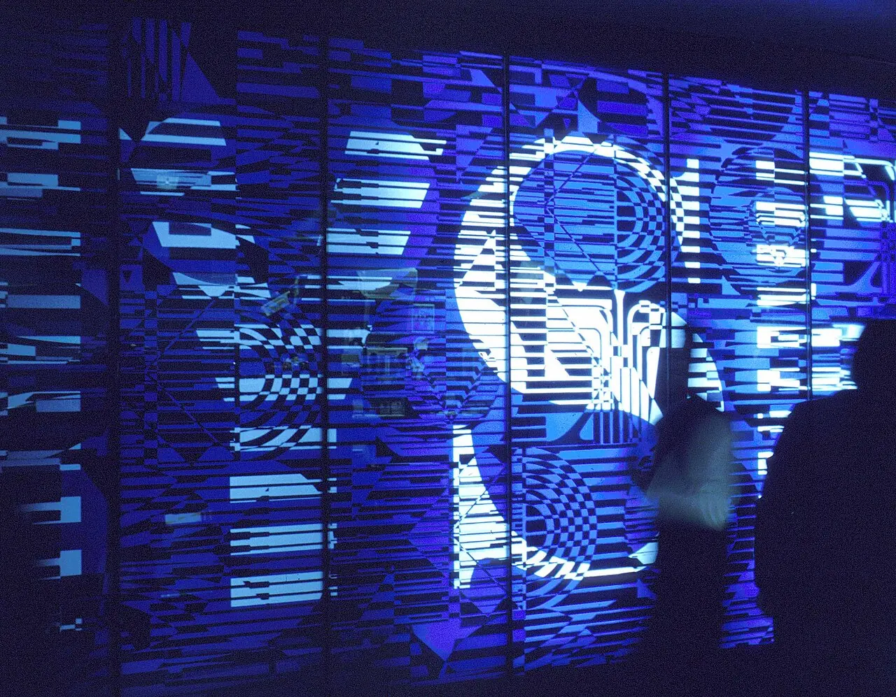

실적 발표에서 가이던스는 숫자 이상의 의미를 갖습니다. 회사가 다음 분기 매출을 얼마로 제시했는지도 중요하지만, 그 숫자를 어떤 단어로 설명하는지가 더 중요할 때가 많습니다. 수요가 견조하다는 말과 주문 가시성이 낮다는 말은 같은 성장률 안에서도 전혀 다른 신호입니다.
경영진은 불확실성을 모두 말하지는 않지만 표현을 바꿉니다. 고객 주문이 늦어지는지, 재고 조정이 끝났는지, 가격 인하가 필요한지, 비용 절감이 계획대로 되는지에 따라 단어의 온도가 달라집니다. 투자자는 가이던스를 전망치가 아니라 자신감의 기록으로 읽어야 합니다.
가이던스를 볼 때는 컨센서스 대비 높고 낮음만 확인하지 말고 매출의 질을 봐야 합니다. 물량 증가인지 가격 인상인지, 신규 고객인지 기존 고객의 재고 보충인지, 반복 매출인지 일회성 프로젝트인지 구분해야 합니다.
숫자보다 단어가 먼저입니다

경영진의 표현은 수요 가시성과 가격 협상력을 보여 줍니다.
강한 가이던스라도 보수적 표현이 많으면 시장은 조심스럽게 반응할 수 있습니다.
약한 숫자라도 일시적 재고 조정으로 설명되면 회복 기대가 남습니다.
이 대목에서는 숫자 하나를 따로 떼어 보지 않는 편이 좋습니다. 경영진의 표현은 수요 가시성과 가격 협상력을 보여 줍니다. 강한 가이던스라도 보수적 표현이 많으면 시장은 조심스럽게 반응할 수 있습니다. 약한 숫자라도 일시적 재고 조정으로 설명되면 회복 기대가 남습니다. 이 흐름이 다음 분기에도 이어지는지 확인하면 뉴스의 크기와 실제 투자 가치 사이의 간격을 줄일 수 있습니다.
컨센서스와 방향을 나눕니다
가이던스가 시장 예상보다 높아도 전분기 대비 둔화라면 해석이 갈립니다.
예상보다 낮은 가이던스가 비용 절감과 함께 나오면 이익률 방어는 가능할 수 있습니다.
투자자는 절대 숫자와 변화 방향을 동시에 봐야 합니다.
컨센서스와 방향을 나눕니다을 볼 때는 숫자 하나를 따로 떼어 보지 않는 편이 좋습니다. 가이던스가 시장 예상보다 높아도 전분기 대비 둔화라면 해석이 갈립니다. 예상보다 낮은 가이던스가 비용 절감과 함께 나오면 이익률 방어는 가능할 수 있습니다. 투자자는 절대 숫자와 변화 방향을 동시에 봐야 합니다. 이 흐름이 다음 분기에도 이어지는지 확인하면 뉴스의 크기와 실제 투자 가치 사이의 간격을 줄일 수 있습니다.
매출의 질을 확인합니다
가격 인상으로 만든 성장은 물량 둔화와 함께 볼 필요가 있습니다.
일회성 프로젝트 매출은 반복 매출보다 낮은 배수를 받아야 합니다.
신규 고객 확대는 단기 비용이 늘어도 장기 가치를 높일 수 있습니다.
이 대목에서는 숫자 하나를 따로 떼어 보지 않는 편이 좋습니다. 가격 인상으로 만든 성장은 물량 둔화와 함께 볼 필요가 있습니다. 일회성 프로젝트 매출은 반복 매출보다 낮은 배수를 받아야 합니다. 신규 고객 확대는 단기 비용이 늘어도 장기 가치를 높일 수 있습니다. 이 흐름이 다음 분기에도 이어지는지 확인하면 뉴스의 크기와 실제 투자 가치 사이의 간격을 줄일 수 있습니다.
비용 가이던스도 중요합니다
매출 전망이 좋아도 비용 증가가 더 빠르면 이익률은 낮아집니다.
인력, 마케팅, 물류, 설비투자 계획은 다음 분기 이익의 힌트입니다.
회사가 비용을 통제하고 있다는 표현을 구체적으로 확인해야 합니다.
이 대목에서는 숫자 하나를 따로 떼어 보지 않는 편이 좋습니다. 매출 전망이 좋아도 비용 증가가 더 빠르면 이익률은 낮아집니다. 인력, 마케팅, 물류, 설비투자 계획은 다음 분기 이익의 힌트입니다. 회사가 비용을 통제하고 있다는 표현을 구체적으로 확인해야 합니다. 이 흐름이 다음 분기에도 이어지는지 확인하면 뉴스의 크기와 실제 투자 가치 사이의 간격을 줄일 수 있습니다.
반복되는 수정은 신뢰 문제입니다
가이던스를 자주 낮추는 회사는 예측 능력에 의심을 받습니다.
반대로 보수적으로 제시하고 꾸준히 달성하는 회사는 프리미엄을 얻습니다.
빅데이터에서는 숫자의 정확도보다 약속과 달성의 기록을 봐야 합니다.
이 대목에서는 숫자 하나를 따로 떼어 보지 않는 편이 좋습니다. 가이던스를 자주 낮추는 회사는 예측 능력에 의심을 받습니다. 반대로 보수적으로 제시하고 꾸준히 달성하는 회사는 프리미엄을 얻습니다. 빅데이터에서는 숫자의 정확도보다 약속과 달성의 기록을 봐야 합니다. 이 흐름이 다음 분기에도 이어지는지 확인하면 뉴스의 크기와 실제 투자 가치 사이의 간격을 줄일 수 있습니다.
가이던스는 미래를 맞히는 정답지가 아닙니다. 경영진이 현재 수요와 비용을 어느 정도까지 볼 수 있는지 보여 주는 자료입니다. 숫자와 단어를 함께 읽으면 시장이 왜 같은 실적에도 다르게 반응하는지 이해하기 쉬워집니다.
다음 실적 발표에서는 가이던스 숫자, 컨센서스 차이, 매출의 질, 비용 표현, 지난 가이던스 달성률을 함께 확인해 보세요. 이 다섯 가지가 기업의 자신감을 가장 현실적으로 보여 줍니다.
기업 분석은 숫자의 크기를 보는 일이 아니라 숫자의 이동 경로를 보는 일입니다. 매출이 이익으로, 이익이 현금으로, 현금이 주주환원이나 재투자로 이어지는지 확인하면 실적의 질을 더 정확히 판단할 수 있습니다.
실적 발표 직후에는 주가가 먼저 움직이고 해석이 뒤따르는 경우가 많습니다. 컨센서스 차이, 가이던스, 재고, 매출채권, 비용 구조를 같은 표에 놓고 보면 과도한 반응과 진짜 변화를 구분하기 쉽습니다.
마지막으로 빅데이터 글을 읽을 때는 가격이 먼저 움직인 뒤 이유가 붙는 경우가 많다는 점을 기억해야 합니다. 투자자는 결론을 서둘러 정하기보다 공식 자료, 최근 실적, 현금흐름, 밸류에이션, 시장 기대가 서로 같은 방향인지 차분히 확인하는 편이 좋습니다.
기업 분석은 숫자의 크기를 보는 일이 아니라 숫자의 이동 경로를 보는 일입니다. 매출이 이익으로, 이익이 현금으로, 현금이 주주환원이나 재투자로 이어지는지 확인하면 실적의 질을 더 정확히 판단할 수 있습니다.
실적 발표 직후에는 주가가 먼저 움직이고 해석이 뒤따르는 경우가 많습니다. 컨센서스 차이, 가이던스, 재고, 매출채권, 비용 구조를 같은 표에 놓고 보면 과도한 반응과 진짜 변화를 구분하기 쉽습니다.
마지막으로 투자 글을 읽을 때는 가격이 먼저 움직인 뒤 이유가 붙는 경우가 많다는 점을 기억해야 합니다. 투자자는 결론을 서둘러 정하기보다 공식 자료, 최근 실적, 현금흐름, 밸류에이션, 시장 기대가 서로 같은 방향인지 차분히 확인하는 편이 좋습니다.
이 글의 목적은 정답을 대신 내려 주는 것이 아니라 확인 순서를 줄이는 데 있습니다. 관심 종목이나 상품이 있다면 같은 기준을 표로 옮겨 적고, 다음 실적 발표 때 실제 숫자가 어떻게 변했는지 다시 비교해 보는 방식이 가장 안전합니다.
던스 매출 성장률보다 경영진의 자신감을 읽 자료입니다을 다시 점검할 때는 한 번의 뉴스보다 여러 분기의 방향이 중요합니다. 숫자가 좋아지는 이유가 가격인지 물량인지, 비용 절감인지 일회성인지 나누어 보면 기대와 현실의 차이를 더 빨리 알아차릴 수 있습니다.
빅데이터에서는 숫자가 좋아진 이유를 반드시 나눠야 합니다. 가격 인상인지, 물량 증가인지, 환율인지, 비용 절감인지, 일회성 이익인지에 따라 다음 분기 지속 가능성이 달라집니다. 같은 영업이익 증가라도 질은 완전히 다를 수 있습니다.
현금흐름표는 손익계산서의 빈틈을 메워 줍니다. 순이익이 늘었는데 영업현금흐름이 약하면 재고나 매출채권, 선급비용을 확인해야 합니다. 좋은 실적은 장부 이익뿐 아니라 현금으로도 남아야 합니다.
가이던스와 컨퍼런스콜은 숫자의 방향을 설명합니다. 경영진이 수요를 어떻게 표현하는지, 비용 압박을 어떻게 말하는지, 고객 주문과 재고를 어떤 단어로 설명하는지 기록하면 다음 실적의 단서를 더 빨리 잡을 수 있습니다.
또 하나 중요한 점은 기록입니다. 관심 있는 종목이나 상품을 볼 때 오늘의 판단 근거를 짧게 남겨 두면 다음 실적 발표나 시장 변화가 왔을 때 생각이 어떻게 달라졌는지 확인할 수 있습니다. 이 기록은 매수와 매도보다 먼저 투자 습관을 안정시키며, 같은 실수를 반복하지 않게 도와줍니다.
작은 차이를 확인하는 습관이 쌓이면 같은 뉴스에서도 더 침착하게 판단할 수 있습니다.
관련 영상
실적 가이던스와 컨센서스를 읽는 방법